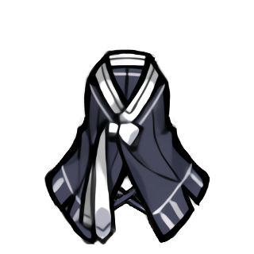
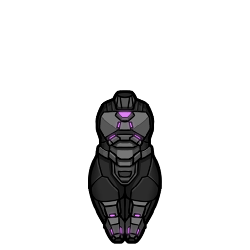
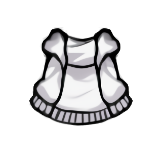
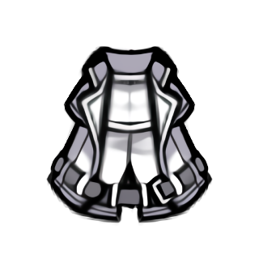
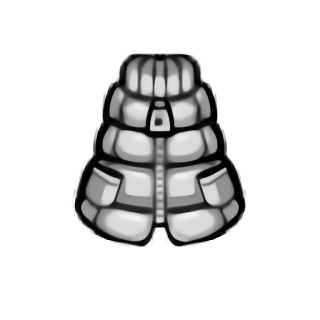

魅狐传统外套Kurin_OnSkin_Traditional_Coat

Kurin/Apparel/Shell/Traditional_Coat/Texture
—
这是魅狐的传统服饰，单调的深蓝色外套上点缀着引人注目的白色花纹。
本片：魅狐传统外套 “赤狐”动力 魅狐开襟羊毛 魅狐防尘大衣 魅狐风雪大衣
Kurin_OnSkin_Traditional_Coat
Kurin/Apparel/Shell/Traditional_Coat/Texture
—
这是魅狐的传统服饰，单调的深蓝色外套上点缀着引人注目的白色花纹。
Kurin_Redfox_Armor
Kurin/Apparel/OnSkin/Redfox_armor/Texture
护甲 1.1/0.5/0.5
旧魅狐共和国的强力盔甲……的复制品。赤狐军的士兵们穿着这种盔甲进行太空和地面作战。
Kurin_Shell_Cardigan
Kurin/Apparel/Shell/Cardigan/Texture
—
蓬松温暖的开襟羊毛衫。小心别把它撑变形了！
Kurin_Shell_Duster
Kurin/Apparel/Shell/Duster/Texture
—
这是一种时尚的外套，可以防止明显的高温和寒冷。
Kurin_Shell_Winter_Padding
Kurin/Apparel/Shell/Winter_Padding/Texture
—
冬季用的大衣。这是度过寒冷冬季时魅狐们的必备品。